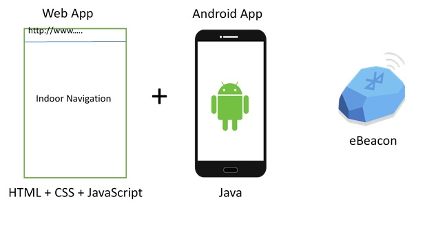
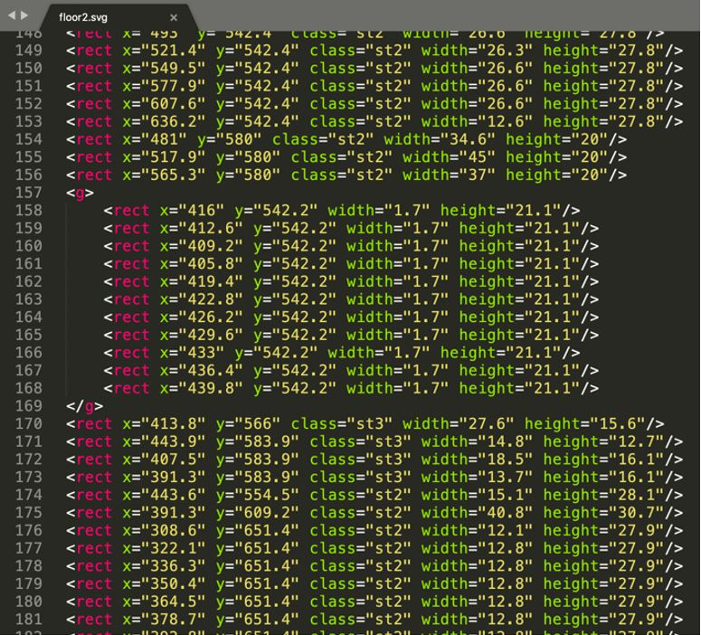
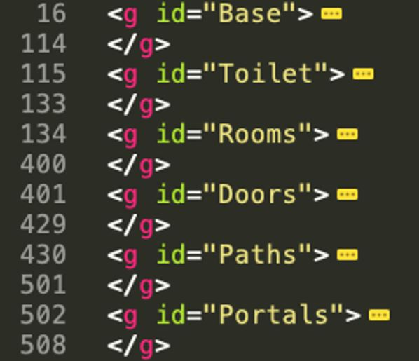
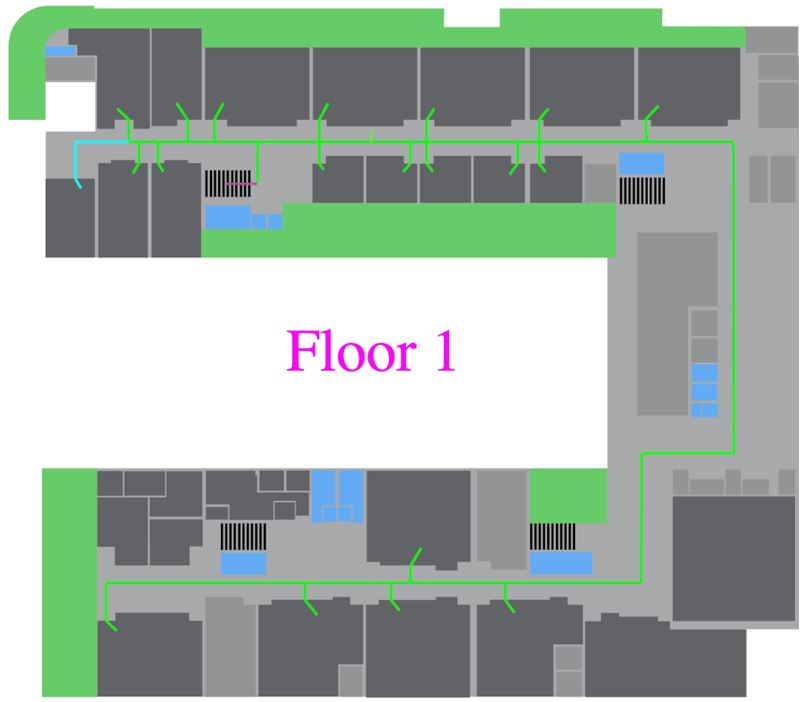
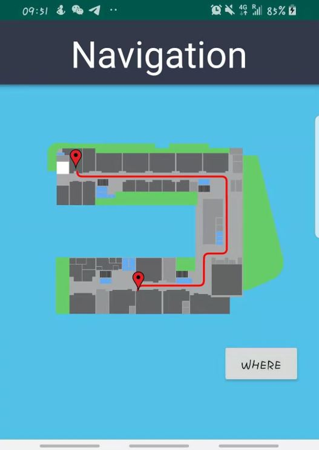
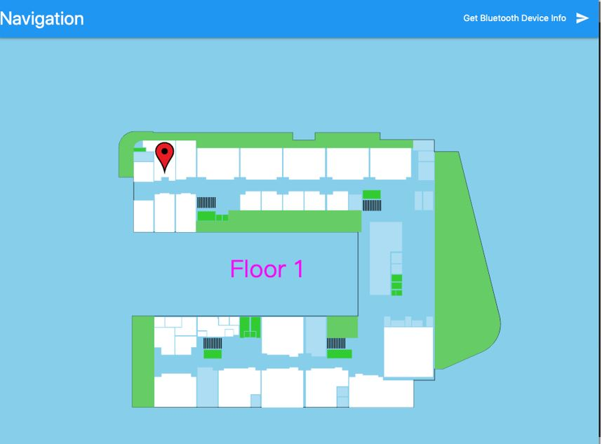
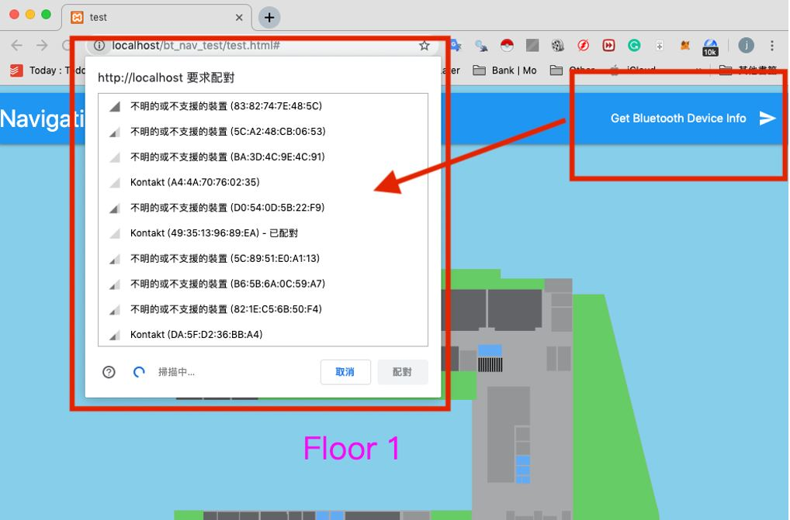

Campus Indoor Navigation
Advisors
Dr. Giovanni Pau, Prof. Rita Tse, Mr. Lorenzo Monti
Members
Fitbi Hoi, Joe Wong
Dr. Giovanni Pau, Prof. Rita Tse, Mr. Lorenzo Monti
Fitbi Hoi, Joe Wong
This project is to designing/developing an app to support wayfinding based on ebeacons inside the campus, considering personalized paths. And the areas invoke Wayfinding, Personalization, Indoor localization, etc. The technologies includes Web map of the Cesena campus (SVG based), eBeacons indoor positioning. Web and Mobile application development.
Indoor positioning is the first issue to consider when developing indoor navigation. Nowadays, there are many ways or technologies to achieve indoor positioning. For example: Wi-Fi, FRID, Ultrasound, etc. Also, the eBeacon provides indoor positioning as well.
eBeacon is based on Bluetooth low energy proximity sensing by transmitting a universally unique identifier picked up by a compatible app or operating system. The identifier and several bytes sent with it can be used to determine the device's physical location, track customers, or trigger a location-based action on the device such as a check-in on social media or a push notification.
Indoor navigation provides current location of the user which allow users to know where they are. Also, users can navigate point-to-point from a startpoint to an endpoint. For example, a freshman wants to know the direction to pavilion. Indoor navigation is able to provide the direction from the current location to pavilion.
In this project, we should provide the indoor navigation and positioning inside the campus to users.
There are several main tasks that need to be due with. They are reconstructing code of the SVG map, create paths(roads) of SVG map, implement both of web-based and android app application. In addition, integration and testing.
We developed a web application which provides indoor navigation on the campus' map. Also, we developed an android application to display the web app and commutation with the eBeacon. Therefore, users are able to find the direction to anywhere inside the campus.
 Figure 1First of all, we need to reconstruct code of the SVG map that provided by Universal of Bologna. It is because there are lack of construction in the original SVG map. Therefore in order to make function of point-to-point navigation work. The need of reconstruction is necessary. As you see, it is hard to figure out the relationship between these code. So, we have to reorganize them in order to make it readable and easy for us organize future work.
 Figure 2The below pictures shows highline part of the SVG maps after edited.
 Figure 3In this tasks, we have to draw roads on the SVG maps through adobe illustrator. Also, a door should be written on each classroom or laboratory which can provide an endpoint for the navigate function. The below picture shows the edited SVG map with partial roads.
 Figure 4In addition, we have to implement both of web and android application. The Web app is developed using HTML, CSS and JavaScript. The android app is based on Java. The web app is able to display the maps and allow users to click on each room. After that, there will be a shortest road to destination displayed on the map. However, there are some technical reasons that make the connectivity with eBeacon failure. Therefore, we need to develop the android app to connect with eBeacon in order to implement the indoor positioning function.
Finally, we have to intergrade the web and android application. The web app aims to provide indoor navigation and display the map. Besides, the android app is able to display the web app and connect with eBeacon to getting users' current location
 Figure 5Throughout the project, we had ran into various difficulties. Most of them could be easily solved by changing the design of the interface or the code written. However, there were several problems we encountered which can only be solved by proposing a different design and implementation. A few of them have been listed below.
We discover the issue when we attempt to implement wayfinding API to multiple floor after reconstruct the code of the SVG maps. The web application display the SVG maps in a different color compared to its original. This problem occurs as the SVG maps contain the same CSS class names which cause the error. At last, we need to change the class names of each SVG map to a unique name in order to solve the problem. The below picture shows that error maps and those rooms are not clickable.
 Figure 6At the early stages of the project we attempt to perform the detection of eBeacon by web Bluetooth API in a web application. But unfortunately, we discover that the API cannot retrieve the unique ID of the eBeacon. This is a big issue as we could not identify the beacon the application connect to if there exists a beacons with the same device name. Furthermore, the API couldn't retrieve the RSSI value from the beacon which identifies the nearest beacon for finding the user location. As a result, we decided to create an android application and display the web on the application using Webview. This method enables the application to retrieve the unique ID and the RSSI value of the eBeacon from user'’'s smartphone. Then the application can notify the user about its indoor location through the SVG map.
 Figure 7After we created the android application to detect the nearest beacon and the web application, we attempt to merge both application. By the implementation of webview on the android application, we were able to display the web on the android application. However, we discovered that java functions of the android couldn't be invoked directly by the web. As a result, we created a Java class named "JavaScriptInterface" on the android application and apply the class to the webview. This java class contains functions that needed to be involved by the web to detect the nearest eBeacon. By the implementation of the java class, it enables the web to communicate with the android application by invoke java function through the web JavaScript.
In conclusion, we have successfully design an android application to support wayfinding based on beacons inside the campus, considering personalized paths. In the future, we may implement functions that display each room information include collected data from different sensors, provides AR (augmented reality) for the indoor navigation to the users as an improvement of the project.